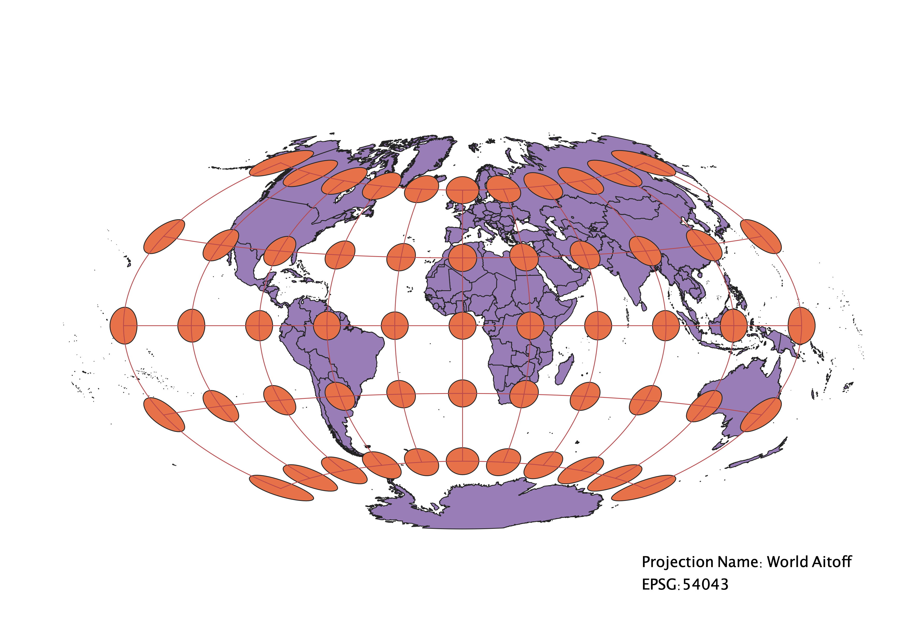

Homework 3
In this project I learned how to create maps in different projections
I used QGIS to add a map in a new project, and then used the Indicatrix Mapper to add the circles and grid that show how the projection changes shape, size, and direction. I clicked on EPSG and searched different projections to display on the map.
WGS84 Projection
Obesrvations: This projection is the one mostly commonly used in GPS systems. That is because it preserves direction, so it can be trustworthy in using for navigation. On the other hand. It distorts the shape and size of countries near the poles.

Aitoff Projection
Observations: This projection does not conserve direction. But in doing so, it shows the curvature of the earth more clearly. It mostly conserves shape, although some of the shapes are alittle stretched near the poles. It also mostly conserves size, except for some of the shapes that are slightly larger on the outer east and west edges of the map.

Pseudo Mercator Projection
Observations: This projection clearly conserves shape and direction. The size is larger near the poles, but mostly uniform in between.

Sphere Winkel I
Observations: Similiar to the Aitoff projection, this map gives a more curved look. It does not conserve direction, but it does keep the shape and size mostly uniform, except near the poles.
World Equidistant Conic Projection
Observations: This projection gives a top view of the earth, flattened out. it preserves distance, but not shape or size, except for the very center.
World Cylindrical Equal Area Projection
Observations: This projection preserves area, but does not preserve any other factors. Shape and size are mostly unfirm in the center, but are clearly distorted at the poles.

World Craster Parabolic Projection
Observations: This projection also has a cruved look, but is more pinched in at the poles. This creates a ditrotion of shape and size at the poles. It also means that direction is not conserved. The area is strected and not uniform.
World Goode Homosoline Land Projection
Observations: This projection is not unifrom in any way at all. Some of the shapes are significantly stretched while others are not. The size, direction, and shape of each circle is completeyl different. The area also changes signicantly throughout the map. The purpose of this map is to conserve accurate area of the shapes, but it is hard to tell because the projection is originally broken up and leaves spaces between countries, where the map was cut. The flat projection fills this empty space in making some areas look strange.
North Pole Azimuthal Equidistant Projection
Observations: This projection gives a top view of the earth. It preserves direction from the poles. It does not conserve shape or size, especially at the south pole, which wraps around the entire globe and is very large and strecthed out.